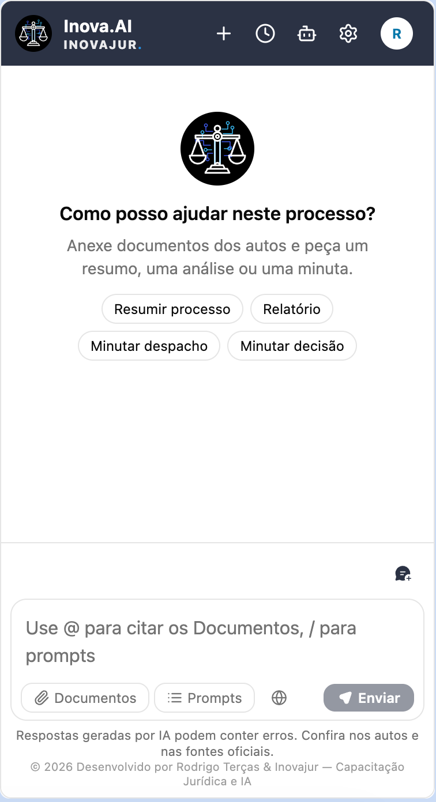
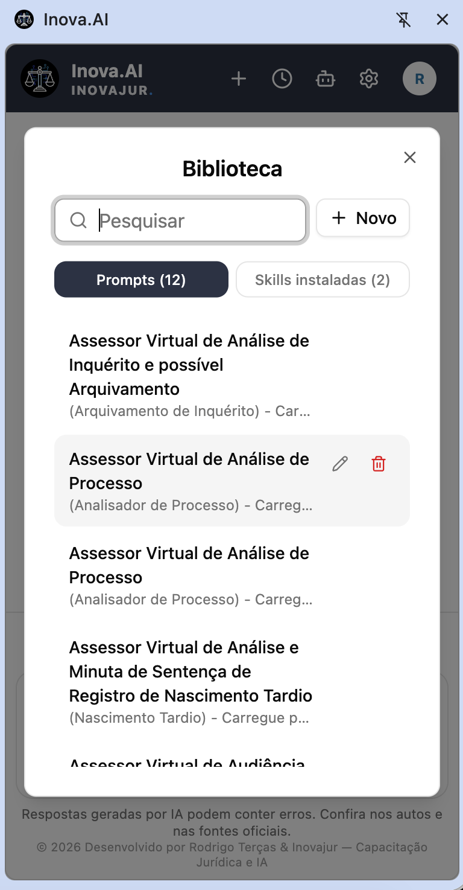

a
Copiar e colar
Cada peça precisa ser aberta, copiada e colada no chat, uma por uma.
IA personalizada para o sistema de justiça
Para advogados, procuradores públicos, promotores e defensores públicos. O Inova.AI abre ao lado dos autos, lê o processo que está na tela e responde, resume e minuta com base nele, do seu jeito.
01O problema
a
Cada peça precisa ser aberta, copiada e colada no chat, uma por uma.
b
Muitos processos, autos longos e pouco tempo para ler tudo antes de agir.
c
Sem acesso aos autos, a resposta sai genérica e precisa ser refeita.
02Como funciona
O botão do Inova.AI aparece na própria página, num canto que você escolhe.
O painel abre na lateral do Chrome, sem sair dos autos.
Resumo, relatório, partes, última movimentação. Para a peça, use um assistente virtual.

03O que ele faz
Linha do tempo, movimentações e o conteúdo das peças do processo aberto, em HTML ou PDF.
Petições, manifestações e minutas redigidas a partir das peças, sem trocar de sistema.
Até 5 arquivos por mensagem: imagens e PDF, inclusive digitalizado.
Liga e desliga em um clique, quando a resposta pede fonte externa.
Gera o arquivo .docx do texto produzido, quando você pedir.
As conversas ficam salvas para você retomar depois, do ponto onde parou.
04Assistentes virtuais
Prontos para tarefas do processo, como análise, relatório e minuta. Você escolhe e aplica com / na conversa.
Monte assistentes com as suas teses e os seus modelos. Ficam sincronizados na sua conta.
Procedimentos completos, importados de um arquivo, como no Claude. A IA usa quando o caso aparece.

05InovaJur Cortex
Ligado ao InovaJur Cortex, o assistente passa a consultar as suas memórias, teses e anotações durante a conversa, dentro do PJe.
Incluído no plano
Ultra Conhecer o Cortex06Controle
07Planos
No anual, o valor sai 15% menor que doze mensalidades; o preço do mensal fica em cada cartão como referência. Pagamento por cartão de crédito, na página segura do Stripe. Renovação automática; cancele quando quiser.
08Para quem
01
Leitura dos autos, resumo do andamento e minuta da peça, sem sair do PJe. Para quem advoga sozinho ou em escritório.
02
Volume alto de processos: relatório rápido dos autos e assistentes com as teses e os modelos da procuradoria.
03
Leitura do inquérito e do processo, resumo das provas e apoio à manifestação, com os modelos do gabinete.
04
Muitos assistidos e pouco tempo: o essencial de cada processo em minutos e a peça a partir das próprias teses.
Assistentes personalizados para cada carreira. Para instituições, o plano Enterprise traz contratação sob medida.
09Perguntas
Só a extensão do Inova.AI no Google Chrome. Depois, é entrar com a sua conta InovaJur e abrir um processo no PJe.
Ele lê o processo que está aberto na tela: a linha do tempo, as movimentações e as peças que você permitir abrir.
Sim. Crie assistentes com as suas instruções ou importe skills completas. No plano Ultra, conecte também o InovaJur Cortex.
Não. O Inova.AI apoia a leitura e a redação; a conferência nos autos e nas fontes oficiais, e a decisão, continuam com você.
Por cartão de crédito, na página segura do Stripe, com renovação automática. Você pode cancelar quando quiser e continua com o plano até o fim do período já pago.
Comece pelo plano Free